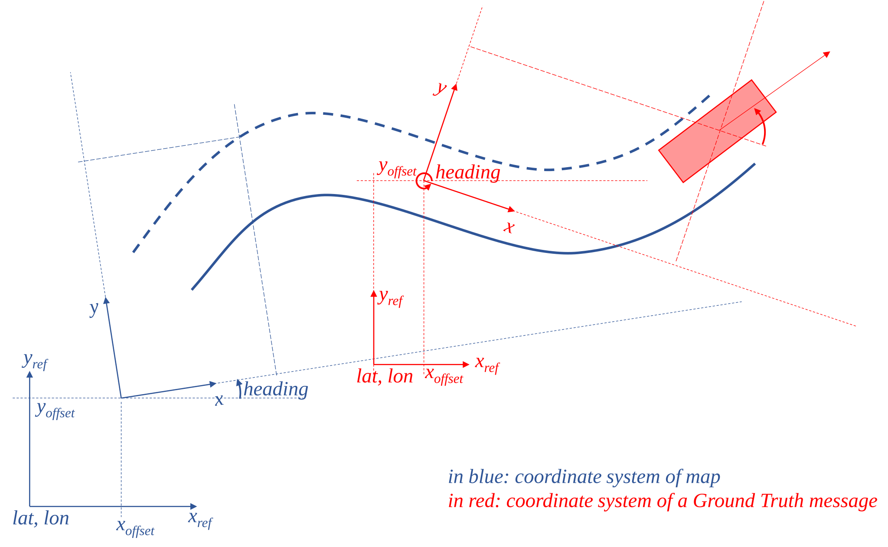
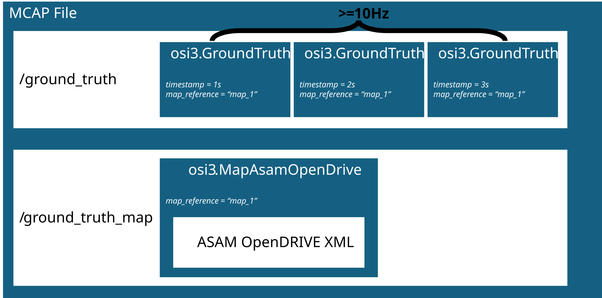

Data Model & Specification
Introduction
In the context of SYNERGIES, Scenario Source Data (SSD) corresponds to the data that is provided to WP5 for scenario identification and extraction. Such data can stem from multiple sources: in-traffic-vehicle data collection, fixed or mobile (e.g., drones) roadside observations, dynamic accident reconstruction, but also generative AI, traffic simulation... WP5 itself will also develop multiple approaches to generate scenarios from data. To facilitate interoperability between multiple data sources and multiple scenarios' creation approaches, a standardization of Scenario Source Data needs to be defined, both in terms of content and in terms of container, i.e., format.
The format itself is called OMEGA-PRIME. It relies on existing ASAM standards, namely ASAM OpenDRIVE and ASAM Open Simulation Interface. Those allow, respectively, to represent the infrastructure and traffic participants' type, trajectories, and state. The OMEGA-PRIME format also specifies MCAP as the container in which ASAM OpenDRIVE maps and Open Simulation Interface messages are stored (or, in the case of map information, optionally linked to) in a file.
Those standards are very flexible, and not all information that can be represented using ASAM OpenDrive and ASAM Open Simulation Interface are required for scenario identification and extraction. Those standards also allow characterizing the same traffic situation in multiple ways, and, especially in the case of Open Simulation Interface, can represent multiple kinds of data.
This document therefore defines which features from the aforementioned standards need to be used, and how they should be used, to create a valid OMEGA-PRIME file.
It also defines requirements on the content of Scenario Source Data itself, in order to meet sufficient quality for scenario identification and extraction.
Notes:
- This specification corresponds to a "least common denominator", i.e., what is directly needed for scenario identification and extraction, and just that. Since the underlying standards allow representing and storing more information, users are free to use additional features at their discretion, for their own needs, as long as they respect the minimum set of rules herein defined.
- In the event that the underlying standards are insufficient, either in terms of features or in terms of documentation (e.g., clarity), the intention of the authors is to collaborate with the standards' maintainers to upstream necessary changes and extensions, rather than inventing yet another incompletely compatible format.
Requirements on Scenario Source Data
Scenario Source Data contains the following information:
- The infrastructure, in the form of a static map,
- A succession of time-stamped observations of:
- Environmental conditions (precipitation, illumination, visibility),
- Properties, states and kinematics of dynamic elements (i.e., traffic participants).
Necessary fields for those categories of information are listed in the subsequent chapter.
More importantly, Scenario Source Data shall correspond to consolidated / ground truth data. This implies that raw sensor data is out of the scope of this specification and cannot be accepted as Scenario Source Data. Rather:
- Dynamic elements must be consolidated over time:
- Successive observations of the same traffic participant must be linked by a unique identifier,
- A traffic participant's classification cannot change over time,
- Properties describing a traffic participant's shape (i.e. its bounding box dimensions) cannot change over time, with the only accepted exception being when the actual participant's shape did change (e.g. door opening).
- They must be properly positioned in relation to the static map.
The creation of such consolidated / ground truth data from raw observations requires complex processing and, in some instance, manual annotation, that depend on the nature of the original data. Such processing may include sensor fusion, object detection and tracking, mapping, geo-referencing... All those operations are out of the scope of this document but need to be performed before Scenario Source Data can be stored and exchanged using OMEGA-PRIME.
OMEGA-PRIME specification
Rationale for the choice of the underlying standards
There exists a multitude of data models and formats that cover the aforementioned information, a selection of established data models and formats is listed below:
| Name | Dynamic Elements | Static Map | Environmental Information | Traffic Light |
|---|---|---|---|---|
| ASAM OSI | ✅ | ✅ | ✅ | ✅ |
| ASAM OpenDRIVE | ✅ | |||
| Lanelet2 | ✅ | |||
| Hi-Drive CDF | ✅ | |||
| OMEGAFormat | ✅ | ✅ | ✅ | ✅ |
Since it is advisable to base the definitions of data model and data format on already established ones, ASAM OSI 3.7.0 lends itself for the representation of dynamic elements since it is already heavily used for co-simulation data exchange by different simulation platforms. ASAM OpenDRIVE 1.8.1 is the most common non-proprietary standard for defining maps for simulation. Therefore, it should be used to define static maps. The usage of OpenDRIVE is already supported by OSI and has the additional benefit, that OpenDRIVE maps can be directly used in simulation tools and there exists tooling around creating such maps. OSI itself does not enforce what signals have to be set and not what quality those signals need to have (There exists the qc-framework for defining rules on these formats). The OMEGAFormat, which has been defined in the VVMethods project specifically for the task of storing traffic data for the validation of automated vehicles, already established such requirements. Therefore, we propose to remodel the OMEGAFormat through usage of ASAM OSI and ASAM OpenDRIVE. In the following the resulting SSD Specification OMEGA-PRIME is presented.
OMEGA-PRIME Specification
OMEGA-PRIME defines a data model and data format for scenario source data through an extension of ASAM OSI, under usage of ASAM OpenDRIVE. Especially for ASAM OSI it defines the exchange of such files and mandatory signals and quality for the use case of scenario identification and generation. The specification has the explicit goal to upstream extensions made to existing formats when possible.
The following sections describe the specification. First, the coordinate system is explained. Then the representation of moving objects through ASAM OSI Ground Truth messages is defined. Lastly, the usage of ASAM OpenDRIVE for information on the map level is specified. Accuracy requirements of signals are derived from the OMEGAFormat.
Coordinate Systems
ASAM OSI and ASAM OpenDRIVE are harmonized in terms of their inertial coordinate system specification (handedness, axis directions and rotation order). The OpenDRIVE 'inertial coordinate system' is defined in the same way as OSI’s 'global coordinate system', relying on the ISO 8855 standard. Both OpenDRIVE and ASAM OSI define further context-related coordinate systems (e.g. road reference line coordinate system in OpenDRIVE, sensor or object coordinate system in OSI). Each standard's documentation must be consulted when working with data structures using these coordinate systems.
Geo Reference
For both OSI and OpenDRIVE the inertial coordinate system’s origin can be mapped to a geographic coordinate system using PROJ transformations in a harmonized way. Both standards allow the definition of a PROJ-string and a corresponding offset. The offset parameter offers a position (x, y, z) and an orientation offset (yaw/heading). It is recommended by both standards to set the orientation offset to 0. For OMEGA-PRIME real-world datasets, both PROJ-string and offset must be given in every frame of the ASAM OSI GroundTruth message as well as in the ASAM OpenDRIVE map.
Note: Pay attention that even if it moves from one observation to the next, this coordinate system never encompasses velocity. Therefore, relative measurements of velocities from a moving observer must not be directly stored in the GroundTruth message but have to be processed first.

Figure 1: Geo-reference and coordinate system in ASAM OpenDRIVE and ASAM OSI
Dynamic Information
For representing object-list based trajectory information of moving elements and the dynamic information of traffic signs, OMEGA-PRIME utilizes ASAM OSI GroundTruth messages.
Each GroundTruth message defines one point in time.
The dynamic extent of the SSD is therefore be represented through a sequence of OSI GroundTruth messages.
To appropriately cover highly dynamic contexts found in urban environments, OMEGA-PRIME sets a minimum required frequency of 10Hz on those messages.
Unless stated otherwise, the fields listed in the following table are mandatory in each of the OSI GroundTruth messages.
Detailed info about the signal content are found in the ASAM OSI documentation.
Additional fields, e.g. as defined in the Open Simulation Interface, are optional.
To represent a corresponding sequence of weather observations the OSI message environmental_conditions (contained in OSI GroundTruth) can be filled.
The column 'Minimal Accuracy' indicates the desired accuracy of the signal in relation to the real world.
Note on Field Presence in Protobuf
With all proto fields being intentionally marked as optional in OSI, field presence is tracked independent of the protobuf version (proto2, proto3).
Though, the default value handling (in the case of unset fields) might still cause confusion, e.g., basic type fields are deserialized using their default value (0 for numeric types, false for booleans, zero-valued enumerator for enums, zero-length value for strings, bytes and repeated fields) even if they weren't set during serialization.
Hence, to know if a field was intentionally set, the presence checking functionality of the corresponding protobuf implementation (if implemented) can be used.
Example:
osi3::MovingObject::VehicleClassification::has_trailer is not a mandatory field in the OMEGA-PRIME format.
If has_trailer was not set during serialization, it will still resolve to its basic type's default value (false) when deserializing/reading the value.
This could theoretically be interpreted to mean that the has_trailer field has been left blank on purpose to indicate false for a reader.
Though, it could be checked if the field was actually intendedly set to false using the field presence checking functionality (e.g. msg.HasField('foo') in Python).
| Signal hierarchy | Data model and type | Minimal Accuracy |
|---|---|---|
| map_reference |
str Content depends on the chosen map association option (see 'OMEGA-PRIME Format Specification'). |
|
| country_code | int [3 digit ISO country code (e.g. germany=276,usa=840)]. | |
| version | InterfaceVersion | |
| . version_major | int | |
| . version_minor | int | |
| . version_patch | int | |
| proj_frame_offset | GroundTruthProjFrameOffset | 0,2 m |
| . position | Vector3D | 0,2 m |
| . yaw | float | 0,035 rad (2°) |
| proj_string |
str [PROJ coordinate transformation software library] Mandatory for real world data; Can be omitted for simulation data. |
|
| timestamp | Timestamp (total time is combination of seconds and nanos) | |
| . nanos | int | |
| . seconds | int | |
| host_vehicle_id | Identifier | |
| . value | int | |
| moving_object | list[MovingObject] | |
| . id | Identifier | |
| . . value | int | |
| . base | BaseMoving | |
| . . dimension | Dimension3D | |
| . . . x | float [m] | 0,2 m |
| . . . y | float [m] | 0,2 m |
| . . . z | float [m] | 0,2 m |
| . . position | Vector3D | |
| . . . x | float [m] | 0,2 m |
| . . . y | float [m] | 0,2 m |
| . . . z | float [m] | 0,2 m |
| . . orientation | Orientation3D | |
| . . . roll | float [rad] | 0,035 rad (2°) |
| . . . pitch | float [rad] | 0,035 rad (2°) |
| . . . yaw | float [rad] | 0,035 rad (2°) |
| . . velocity | Vector3D | 0,1 m/s |
| . . acceleration | Vector3D | 0,1 m/s^2 |
| . type |
MovingObjectType (Other, Vehicle, Pedestrian, Animal) |
|
| . vehicle_classification | MovingObjectVehicleClassification | |
| . . type |
MovingObjectVehicleClassificationType (Other, car, delivery van, semitrailer, trailer, motorbike, bicycle, bus, tram, train, wheelchair, standup scooter) |
|
| . . role |
MovingObjectVehicleClassificationRole (Other, civil, ambulance, fire, police, public transport, road assistance, garbage collectin, road construction, military) |
|
| traffic_light | list[TrafficLight] | |
| . id | Identifier | |
| . . value | int | |
| . base (optional) |
BaseStationary The position of traffic lights is given in the associated OpenDRIVE map file. If optionally given in the OSI message, it must match the corresponding data in the map file. The association between OSI and OpenDRIVE objects is established using the 'source_reference' field. |
|
| . classification | TrafficLightClassification | |
| . . color |
TrafficLightClassificationColor (Other, red, yellow, green, blue, white) |
|
| . . icon |
TrafficLightClassificationIcon (Other, none, arrow_straight_ahead, arrow_left, arrow_diag_left, arrow_straight_ahead_left, arrow_right, ...) |
|
| . . mode |
TrafficLightClassificationMode (Other, off, constant, flashing, counting) |
|
| . . counter | float | |
| . . is_out_of_servcie | bool | |
| . source_reference |
list[ExternalReference] The source reference maps the dynamic OSI traffic light information to the static traffic light information in the OpenDRIVE map. |
Static Information
The static map information is defined through ASAM OpenDRIVE 1.8.1. The map should contain information on the roads all observed traffic participants are moving on and the respective lanes. This includes information on the junction and road object positions defined by ASAM OpenDRIVE. See the ASAM OpenDRIVE specification on data model and format definitions. When real-world data is represented, the deviation of the modelled geometries to the real-world counterparts should not be larger than 0.2m.
OMEGA-PRIME Format Specification
The OMEGA-PRIME MCAP multi-channel trace file format is a binary file format that allows for storing a serialized specified subset of an OSI GroundTruth message stream, along with additional meta-data, OpenDRIVE map data and other related data streams.
OMEGA-PRIME is based on the OSI MCAP multi-channel trace file format and therefore is a specialization with additional constraints and requirements. Hence, any valid OMEGA-PRIME multi-channel trace file is also a valid OSI MCAP file, but not the other way around. This means that an OMEGA-PRIME MCAP file must comply with all constraints and requirements defined in the OSI MCAP format specification. This includes general file writing requirements (e.g. chunk indexing), mandatory file-global metadata definitions (e.g., OSI version, zero time, authors, data sources) as well as mandatory channel-specific metadata for the OSI GroundTruth channel.
The following rules apply to OMEGA-PRIME multi-channel trace files:
- The OMEGA-PRIME OSI GroundTruth message stream must be stored as a compliant OSI channel as specified by the OSI MCAP format specification.
- The channel name of the OMEGA-PRIME OSI GroundTruth data must be
\ground_truth. - The OMEGA-PRIME OSI GroundTruth message interface must comply with the required subset as defined in the table in section 'Dynamic Information'.
- The version of the OMEGA-PRIME OSI GroundTruth messages must be >=3.7.0.
- The message frequency of consecutive OMEGA-PRIME OSI GroundTruth messages must be 10Hz or higher.
The OMEGA-PRIME format specifies two options to store the associated ASAM OpenDRIVE map data:
- Option A: Additional MCAP channel which holds a protobuf-encoded message containing a map reference string and the associated ASAM OpenDRIVE map data as specified in the section 'Option A'.
- Option B: Additional ASAM OpenDRIVE XML file located in the same folder as the OSI GroundTruth MCAP file as specified in the section 'Option B'.
The following rules apply independent of the chosen option: - The version of the OpenDRIVE map data must be 1.8.1.
The following sections specify the rules depending on the chosen option.
Option A: Self-contained Package
Storing map data with object data in a single file has the benefit that there is no chance that the association gets lost or is unclear. This is especially relevant for the exchange of data between parties. Therefore, we suggest storing the map information also in the MCAP file.
The OpenDRIVE map should be stored in the MCAP topic /ground_truth_map with the proto MapASAMOpenDRIVE message (specified below).
In open_drive_xml store the string content of an OpenDRIVE XML file.
map_reference must match the map_reference in the GroundTruth message.
package osi3;
message MapAsamOpenDrive
{
optional string map_reference = 1;
optional string open_drive_xml_content = 2;
}

Figure 2: File structure of OMEGA-PRIME self-contained package - scenario source data file.Option B: One Map – Multiple Recordings
On the data provider side, it could be useful to just store an instance of the map once, when you have multiple recordings of the same map.
This can be useful in settings where you are still iterating the map and do not want to update it in many places.
If you use this option, the map file has to be in the same directory (or zip archive level) as the MCAP file and map_reference in the Ground Truth messages must be set to the filename of the ASAM OpenDRIVE file.
Technical Notes
Why is ASAM OpenDRIVE used instead of OSI PhysicalLanes and LaneBoundaries directly?
OSI itself has the option to represent information on lanes and their boundaries. Unfortunately, creating map information in such a way is not widely known and used. Additionally, despite many simulation frameworks providing such data for co-simulation, there is no known, especially no freely available simulation framework, that can take such data as input for creating the virtual worlds in simulation. Currently, the most widely used map format for feeding simulator is OpenDRIVE. Therefore, we define OpenDRIVE as required.
On Downstream Tasks of the Scenario Source Data Format, it could be useful to also have the map information directly in OSI. Since it is not useful for every partner to create tooling for this on their own and different interpretations of standards could cause discrepancy.
How does OSMP relate to OSI and OMEGA-PRIME?
OSMP is the OSI Sensor Model Packaging. It defines how Functional Mock-up Units (FMU) (e.g., Environmental effect model, sensor model, logical models, …) can communicate with the simulation. The communication is performed via OSI messages. Since OMEGA-PRIME also relies on OSI, feeding such models from it is trivial. OMEGA-PRIME is a data model and serialization format; therefore, it does not need to know about any intricacies of OSMP. That would be part of a tool that takes OMEGA-PRIME data and replays it to some models (like generating a OSMPGroundTruthInit from OMEGA-PRIME).
The same holds true for a “dynamic view port”. In some cases, OSMP models might be overburdened, if the amount of data provided to them is too large. Therefore, there exist approaches to first filter a relevant subset of data and provide only this subset to the OSMP model. That would be a task of a tooling that reads in OMEGA-PRIME. The OMEGA-PRIME specification should not have such a view port since the goal is to store the “Ground truth” and all available information.
OSMP might require that the static information is also send and every timestep. This is not respected in OMEGA-PRIME, since, again, OMEGA-PRIME is a serialization format for data exchange and storage. It is task of a reading/parsing tool to take the OMEGA-PRIME and create valid OSMP communication from that. The task is expected to be trivial since OMEGA-PRIME eavily relies on the ASAM OSI specification.